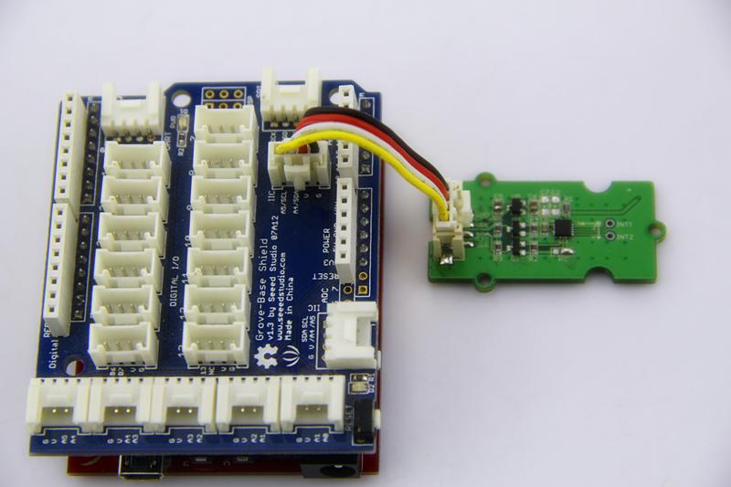
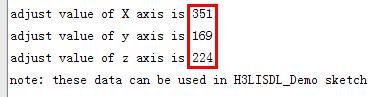
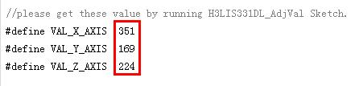

The H3LIS331DL is a low power high performance 3-axis linear accelerometer belonging to the “nano” family, with digital I2C serial interface standard output. The device features ultra low power operational modes that allow advanced power saving and smart sleep to wake-up functions. The H3LIS331DL has dynamically user selectable full scales of ±100g/±200 g/±400 g and it is capable of measuring accelerations with output data rates from 0.5 Hz to 1 kHz.
Here below we show you how to read the raw data from this accelerometer.
1. Plug it onto the I2C port of your Grove - Base Shield.

2. Download the Digital Accelerometer(±400g) Library .zip and unpack it into arduino-1.0\libraries in your Arduino installation folder.
3. Open the demo code directly by the path:File -> Example ->Grove_3Axis_Digital_Accelerometer_H3LIS331DL->H3LIS331DL_AdjVal.It is a sketch to adjust the raw data of H3LIS331DL to make it more precise.
4. Upload the code and open the serial monitor. Please click here if you do not know how to upload.
5. Open the serial monitor to get the adjust value of reference as the steps described in serial output.

6. Open the demo code directly by the path:File -> Example ->Grove_3Axis_Digital_Accelerometer_H3LIS331DL->H3LIS331DL_Demo.then modify the VAL_X_AXIS/VAL_Y_AXIS/VAL_Z_AXIS according to what you get from H3LIS331DL_AdjVal Sketch.

7. Upload the code and open the serial monitor and open the serial monitor to check the result.

If you have questions or other better design ideas, you can go to our forum or wish to discuss.
Copyright (c) 2008-2016 Seeed Development Limited (www.seeedstudio.com / www.seeed.cc)